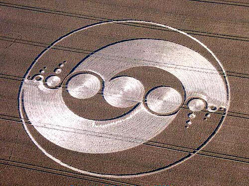

Try it on mobile too! Also, fork this repo and play with the settings. You can have nonsquare or unconstrained crop area aspect ratios, four or eight handles, and a configurable initial crop region. Also try resizing the window or changing orientation on a mobile device.